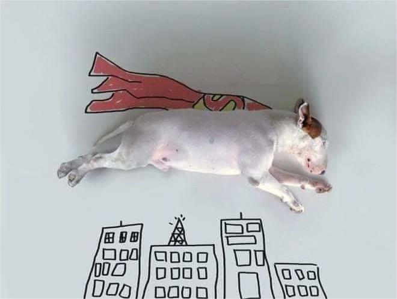

Благополучная собака
С чего начать работу и что точно нельзя делать.
Самоконтроль - это способность собаки управлять своими импульсами, эмоциями и поведением в различных ситуациях. Это очень важный навык для безопасной и комфортной жизни.

Мария поможет разобраться в поведении собаки и подобрать спокойные шаги для вашей ситуации.